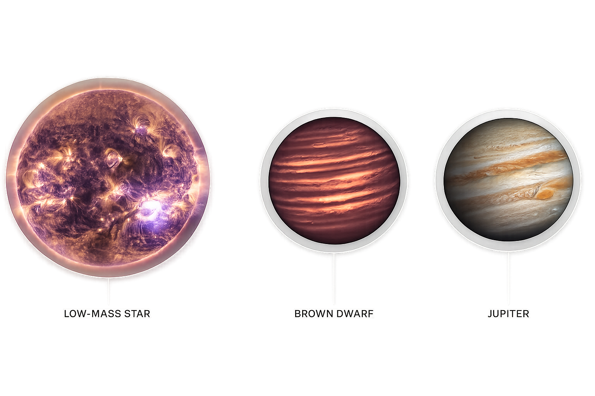

PhD student in cotutelle - Lisboa (IA/FCUL) & Bordeaux (LAB/UB)
Bridging the gap between star and planet formation
Unveiling the origin of brown dwarfs and free-floating planetary-mass objects.

Instituto de Astrofísica e Ciências do Espaço
Universidade de Lisboa
Laboratoire d’Astrophysique de Bordeaux
Université de Bordeaux
A LITTLE ABOUT ME
Between Lisbon
and Bordeaux.
I am a PhD researcher in Physics and Astrophysics at the University of Lisbon, working between the Instituto de Astrofísica e Ciências do Espaço in Lisbon and the Laboratoire d’Astrophysique de Bordeaux, supported by an FCT co-tutelle PhD grant.
My research explores the origin of brown dwarfs and free-floating planetary-mass objects. I am particularly interested in Galactic star formation, the initial mass function, and the disks and variability of young, low-mass objects. My PhD is supervised by Koraljka Mužić and Hervé Bouy.
My academic journeyMY TWO MAIN RESEARCH QUESTIONS
The questions behind the work.
Does environment change what star formation produces?
I study how the products of star formation, from massive O stars to the faintest brown dwarfs, differ between dense, strongly irradiated Galactic clusters and less massive, sparser regions such as Chamaeleon, Taurus and IC 348. The initial mass function describes how many objects form at each mass. Comparing its shape and the relative numbers of stars and brown dwarfs helps us test the influence of stellar density, radiation and the surrounding cloud.
How far down in mass does star formation reach?
I also search for the faintest products of star formation and investigate the lowest-mass end of the IMF. Isolated objects below roughly 13 Jupiter masses are often called planetary-mass brown dwarfs, planetary-mass objects (PMOs), or free-floating planetary-mass objects. This approximate deuterium-burning boundary does not establish how an object formed. PMOs may arise through turbulent fragmentation and collapse, extending the process that produces stars, or form in circumstellar disks and later be ejected through gravitational interactions. Finding and confirming these objects lets us investigate the contributions of these pathways.
Figure caption
Visual representation of the initial mass function down to the planetary mass regime. do Brito do Vale, 2026, 0.8mm black inker on paper